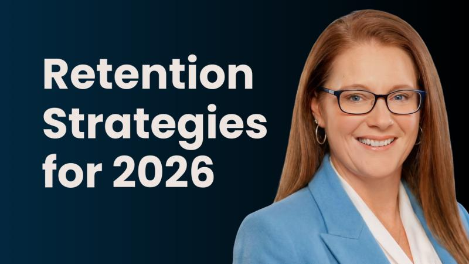

Featured Session · Previously Live
Retention Strategies for 2026
Turnover does not just empty a seat. It resets operating capability: the supervisor who stabilized a difficult shift, the planner who knew every customer exception, the maintenance lead who kept older equipment running. In this session, Heather lays out how manufacturing and industrial leaders should approach retention planning for 2026, while growth, tariff-driven capacity pressure, and a tightening skilled-labor market all land on the same people.
The conversation is built on the system behind HM Pinnacle’s ten-part mission-critical talent series:
- Start retention planning with mission-critical roles, not benefits packages
- Read the early signals that a key employee is becoming a flight risk
- Build the frontline leadership routines that hold retention through growth
- Measure retention like an operating metric, not an HR statistic

Full Session · Free Replay
Watch the full session
Enter your name and work email and the replay opens right here.